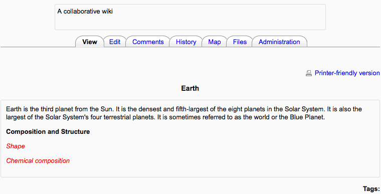
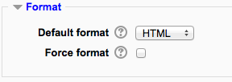

A wiki is a collection of collaboratively authored web documents. Basically, a wiki page is a web page everyone in your class can create together, right in the browser, without needing to know HTML. A wiki starts with one front page. Each author can add other pages to the wiki by simply creating a link to a page that doesn’t exist yet.
In Moodle, wikis can be a powerful tool for collaborative work. The entire class can edit a document together, creating a class product, or each student can have their own wiki and work on it with you and their classmates.

- With the editing turned on, in the section you wish to add your wiki, click the “Add an activity or resource” link (or, if not present, the “Add an activity” drop down menu ) and choose Wiki.
- This will take you to the wiki settings page titled “Adding a new wiki”. All settings may expanded by clicking the “Expand all” link top right.
- In an existing wiki, the wiki settings can be found in Administration > Wiki administration > Edit settings.
Wiki name
The name you give to your wiki here will appear as the link on the course page for your students to click.
Wiki description
Explain the purpose of your wiki here. (This description may or may not be compulsory depending on your admin’s settings.)
Display description on course page
If this box is checked, then the description you added above will appear with the wiki link on the course page.
Wiki mode
Choose between “Individual wiki” where each student gets their own, or “Collaborative wiki” where students work together on a single wiki.
First page name
The name you add here will form the first page of your new wiki. It is a required field and once a name has been entered,it can’t be changed.
(These settings are collapsed by defaul)
Default format
Set the default type of editing your wiki will use. Chooose from
- HTML - editing using the normal text editor
- Creole - a popular wiki editing language. If this is selected, a small editing toolbar will appear.
- NWiki - a wiki editing language used in the contributed NWiki module.
Force format
If you check this box then students cannot choose their own method of editing the wiki.
(These settings are collapsed by default)
These settings are visible if Conditional activities and Activity completion have been enabled in the site and the course.
In Administration> Wiki administration > Locally assigned roles selected users can be given additional roles in the activity.
Role permissions for the activity can be changed in Administration > Wiki administration > Permissions.